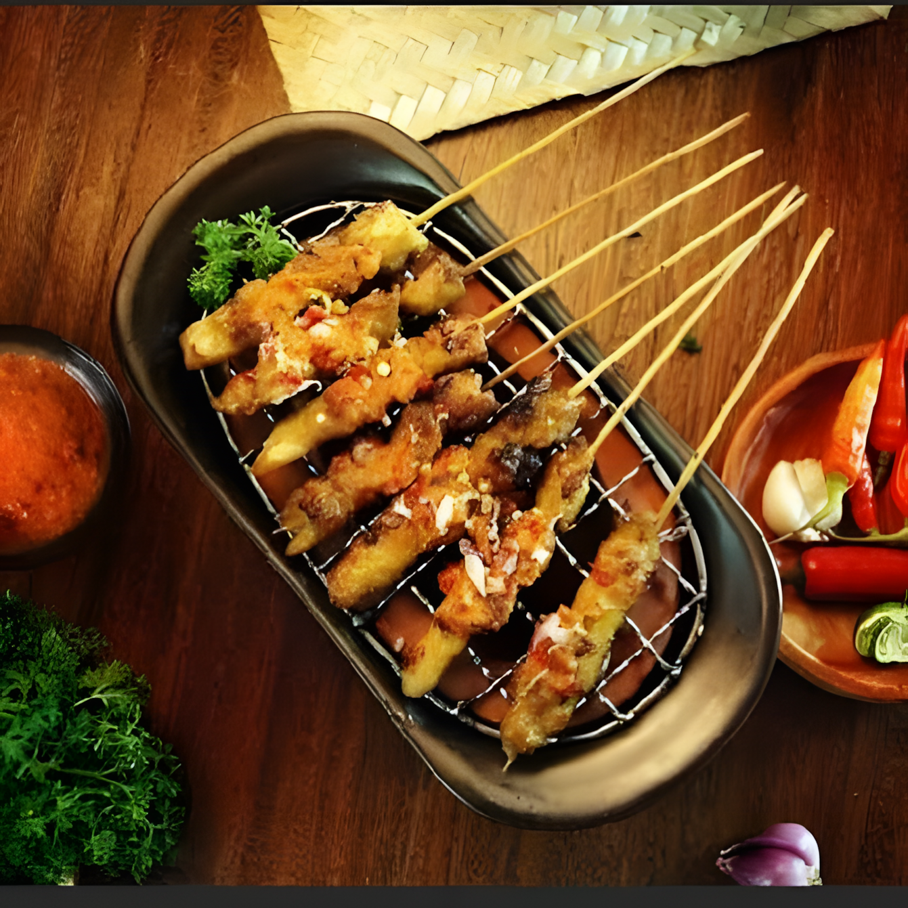
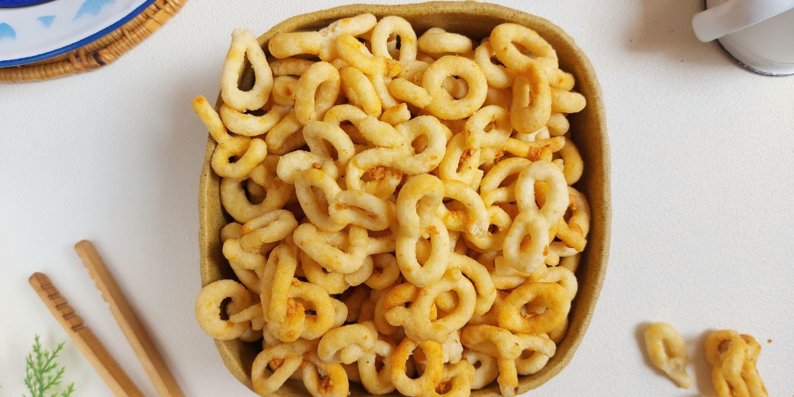
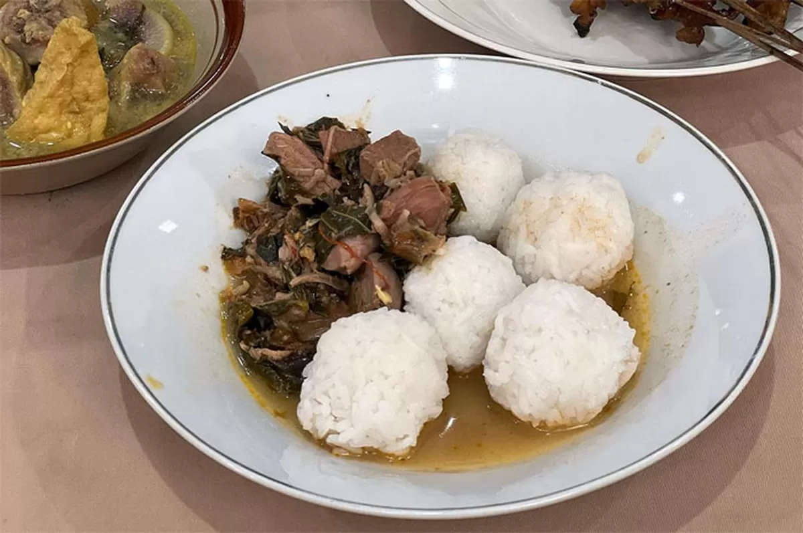
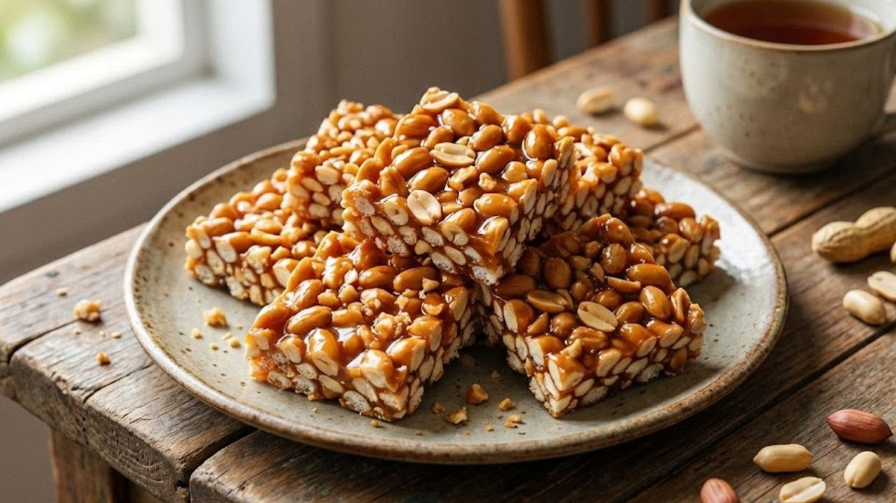

Ikon Kuliner
Sate Ambal
Sate ayam khas Desa Ambal dengan bumbu kacang encer yang gurih, manis, dan sedikit pedas. Ayam kampung dimarinasi rempah sebelum dibakar.
Sate Ambal, Lanting, Nasi Penggel,
dan Jipang Kacang yang Menggugah Selera
Setiap hidangan menyimpan cerita dan cita rasa khas Kebumen
Kabupaten Kebumen tidak hanya kaya akan sejarah dan alam, tetapi juga kuliner autentik yang menjadi ikon daerah. Dari Sate Ambal yang gurih, Lanting yang renyah, hingga Nasi Penggel yang legendaris, setiap hidangan adalah cerminan budaya dan kearifan lokal masyarakat Kebumen.
Ikon kuliner Kebumen yang wajib kamu cicipi

Sate ayam khas Desa Ambal dengan bumbu kacang encer yang gurih, manis, dan sedikit pedas. Ayam kampung dimarinasi rempah sebelum dibakar.

Gorengan renyah berbentuk cincin dari singkong. Populer sebagai oleh-oleh khas Kebumen dengan rasa gurih asin dan aroma bawang putih.

Nasi kepal bulat khas Kebumen. Disajikan dalam pincuk daun pisang dengan sayur nangka muda, kikil bumbu kuning, tahu dan tempe.

Kue urat tradisional berbahan kacang tanah dan gula jawa. Penganan suku Tionghoa yang populer di pasar tradisional Kebumen.
Agar pengalaman kulinermu lebih berkesan
Nikmati saat masih hangat dengan ketupat dan kuah bumbu kacang. Jangan lupa tambahkan kecap manis supaya rasanya makin seimbang.
Cocok sebagai camilan santai. Pilih varian rasa keju atau balado untuk sensasi berbeda. Simpan di wadah kedap udara agar tetap renyah.
Datanglah pagi-pagi (sebelum jam 8) karena cepat habis. Sarapan khas yang mengenyangkan, cocok sebelum beraktivitas seharian.
Oleh-oleh wajib! Bungkus rapi dan bawa pulang untuk keluarga. Tahan lama kalau disimpan di tempat kering dan sejuk.
Setiap tahun, puluhan stan UMKM berkumpul memamerkan aneka kuliner khas Kebumen dan jajanan kekinian. Festival ini menjadi ajang promosi kuliner dan kreativitas masyarakat.
Cek jadwal terbaru di Dinas Pariwisata Kebumen atau media sosial resmi pemkab.
Info Selengkapnya